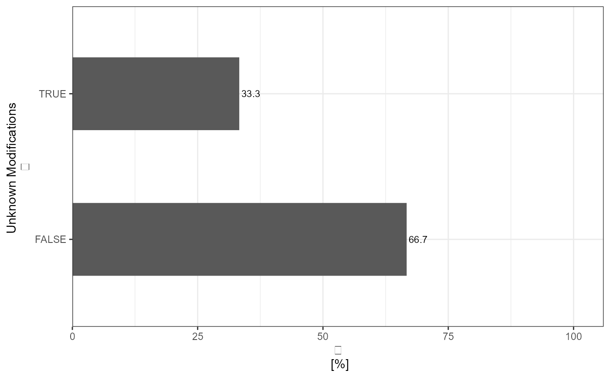

Analysis of the traceR_precursor_unknownMods or traceR_mod.peptides_unknownMods column
Arguments
- input_df
A tibble with the traceR_precursor_unknownMods or traceR_mod.peptides_unknownMods column.
- level
Choose either
precursorfor traceR_precursor_unknownMods ormodified_peptidesfor traceR_mod.peptides_unknownMods. Default is precursor.- plot
Logical value, default is TRUE. If
TRUEbarplot is generated, ifFALSEreport as output.- plot_characteristic
If
absolutethe absolute count is displayed in barplot, ifrelativethe relative count is displayed in barplot. Default is absolute.plot_characteristichas no influence on report.
Details
Shows the absolute and relative counts of TRUE/FALSE of the traceR_precursor_unknownMods or traceR_mod.peptides_unknownMods column - as data frame or plot. Duplicate traceR_mod.peptides entries or traceR_precursor entries are removed, respectively.
Examples
# Load libraries
library(dplyr)
library(stringr)
library(ggplot2)
library(tibble)
# Generate data
data <- tibble::tibble(
"traceR_mod.peptides" = c("AACLLPK",
"ALTDM(UniMod:35)PQM(UniMod:35)R",
"ALTDM(DummyModification)PQMK",
"ALTDM(UniMod:35)PQM(UniMod:35)R",
"ALTDM(DummyModification)PQMK"),
"traceR_mod.peptides_unknownMods" = c(FALSE, FALSE, TRUE, FALSE, TRUE),
"traceR_precursor" = c("AACLLPK2",
"ALTDM(UniMod:35)PQM(UniMod:35)R2",
"ALTDM(DummyModification)PQMK3",
"ALTDM(UniMod:35)PQM(UniMod:35)R2",
"ALTDM(DummyModification)PQMK3"),
"traceR_precursor_unknownMods" = c(FALSE, FALSE, TRUE, FALSE, TRUE)
)
# Generate Report - precursor level
analyze_unknown_mods(
input_df = data,
level = "precursor",
plot = FALSE
)
#> # A tibble: 2 x 3
#> Unknown_Modifications absolute_count relative_count
#> * <lgl> <int> <dbl>
#> 1 FALSE 2 66.7
#> 2 TRUE 1 33.3
# Generate relative Plot - peptide level
analyze_unknown_mods(
input_df = data,
level = "modified_peptides",
plot = TRUE,
plot_characteristic = "relative"
)
